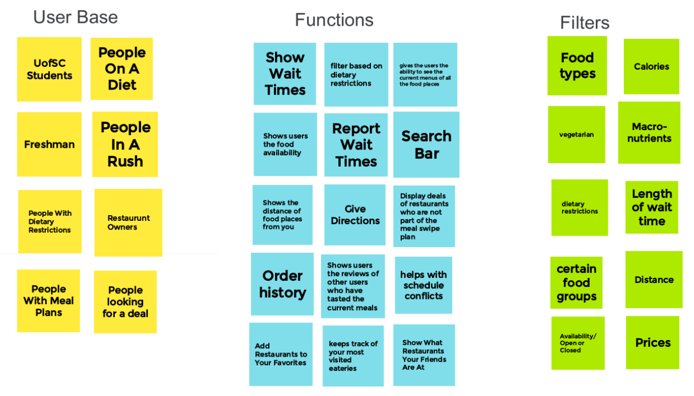

Hi-Fi Prototype: Grup App
A high fidelity prototype
UofSC Students are frustrated because they don't know which dining hall to eat due to the lack of a campus-wide menu as well as the lack of accurate wait times for restaurants. Users also struggle with finding a dining hall that can accommodate their dietary restrictions. Our solution should provide users with a way to find dining halls/restaurants that offer food that accommodates their needs as well as accurate wait times.
My group and I worked together to brainstorm all things food.
This is a model of how our app would work and interact!
A high fidelity prototype